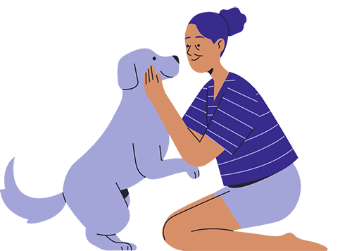

Somos uma comunidade a favor da proteção e adoção de animais em situação de abandono.
Quero participar da comunidade!

Segundo a OMS, existem cerca de 30 milhões de animais abandonados no Brasil e mais de 100 milhões de animais são mortos em testes cosméticos. Pensando nisso, a Salve o PET™ busca facilitar o processo de adoção de cães no Brasil, aproximando voluntários e institutos, melhorando a vida de milhares de animais em situação de abandono.
A salve o pet™ busca facilitar a criação e comunicação de comunidades que tem por objetivo a melhoria da vida animal, e redução da condição de abandono. Entendemos que o fortalecimento da comunicação entre essas comunidades contribui cada vez mais para a melhoria da vida animal.
Respeito à vida e aí bem-estar animal.
Eficácia e transparência
Senso de sustentabilidade
Somos uma equipe engajada que objetiva conectar voluntários e promover uma comunicação eficiente entre pessoas solidárias com a causa do bem-estar animal e os diversos atores do ecossistema de proteção, por meio de plataforma de soluções e serviços a fim oportunizar o acolhimento,recuperação e adoção de animais domésticos em situação de abandono ou maus-tratos e reduzir a quantidade de animais vítimas destas situações.